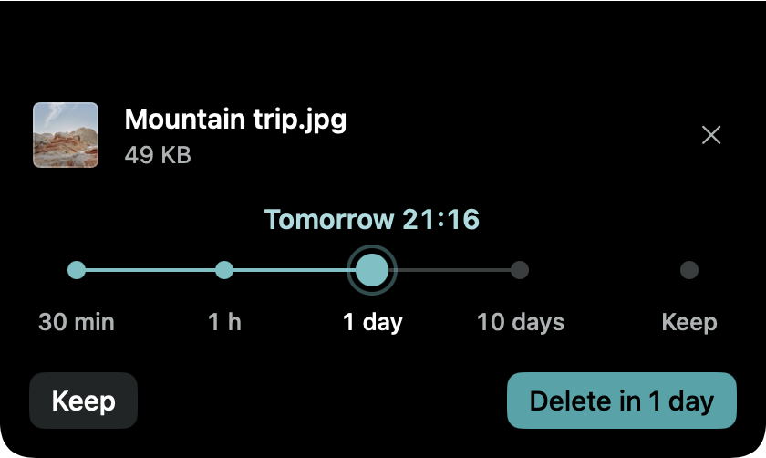
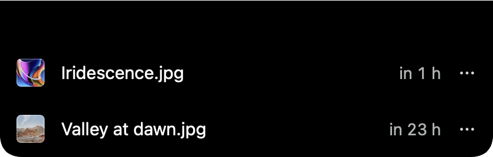
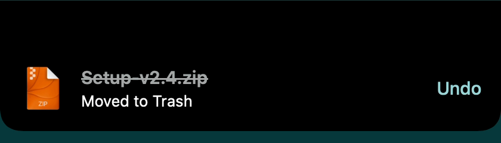

A prompt, a choice, and it is handled.
-
A file lands
Download something into a watched folder and a small prompt opens, under the menu bar icon or from the notch.
-
You pick when it goes
30 minutes, an hour, a day, ten days, or keep it. One slider, one button.
-
It leaves on time
When the time is up, the file moves to the Trash. Undo is one click away.
Small app, careful about your files.
- Five expiry choices
- 30 minutes, an hour, a day, ten days, or keep the file for good.
- Trash, never delete
- Expired files go to the Trash and the notice has an Undo button. Nothing is gone until you empty the Trash.
- Notch or menu bar
- The prompt works on any display setup: under the menu bar icon, or optionally from the notch.
- Several folders
- Downloads by default. Add Desktop or any other folder you want watched.
- Renames and moves are tracked
- Rename a file or move it into a subfolder and it is still tracked. Move it out of the watched folders and it is kept.
- Old files stay untouched
- Files that were already there before you installed DropKeeper are never touched.
- Speaks your language
- English, Czech, German, Spanish and French, switchable in Settings.
- Free and open source
- MIT licensed. Read the code, build it yourself, change it.
What you will see.



100 % offline.
- No analytics.
- No tracking.
- No update checks.
- No network access at all.
There is no networking code in the app. CI fails if any networking API appears in the sources, or if the release binary links a networking framework. File names, contents and history stay in a local database on your Mac.
This website has no analytics either and loads no fonts, scripts or images from other servers.
Install it.
Homebrew needs version 7 or newer, so run brew update first.
brew install --cask direcat/tap/dropkeeper
Or download the latest release (.dmg or .zip) and drag DropKeeper to Applications. On first launch it asks for access to your Downloads folder.
Not notarized
DropKeeper is not notarized by Apple, because that needs a paid developer account. The Homebrew cask removes the macOS quarantine flag after installing, so the app opens normally. If you prefer to keep Gatekeeper's check, install manually and follow the steps in the README.